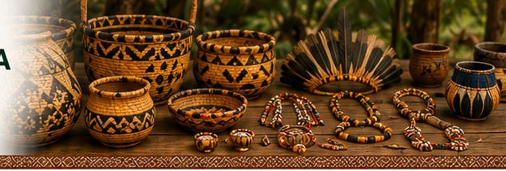
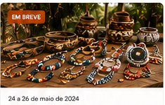
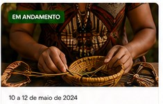
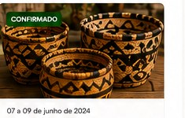
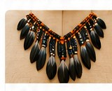
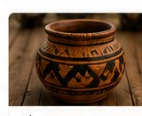
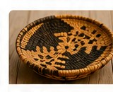

Cultura • trabalho • renda
Feira & Artesanato Terena
Valorizando o trabalho das artesãs e artesãos Terena, promovendo nossa cultura, gerando renda e fortalecendo nossa identidade.
🧺
Artesanato Terena
Peças únicas que carregam nossa história e tradição.
🏪
Feiras e Eventos
Feiras culturais e encontros de artesanato nas aldeias.
👥
Artesãs & Artesãos
Conheça quem cria, inspira e mantém viva nossa cultura.
🛍️
Compre com Propósito
Adquira produtos Terena e fortaleça nossa economia.
📚
Aprenda e Compartilhe
Oficinas, saberes e técnicas tradicionais.
Feiras e eventos em destaque

Feira Cultural Terena 2024
Artesanato, apresentações culturais, culinária tradicional e muito mais.
Ver detalhes →
Feira das Mulheres Artesãs
Valorizando o trabalho das mulheres Terena e sua força criativa.
Ver detalhes →
Encontro de Artesãos Terena
Troca de saberes, técnicas e fortalecimento da cultura Terena.
Ver detalhes →Produtos em destaque



